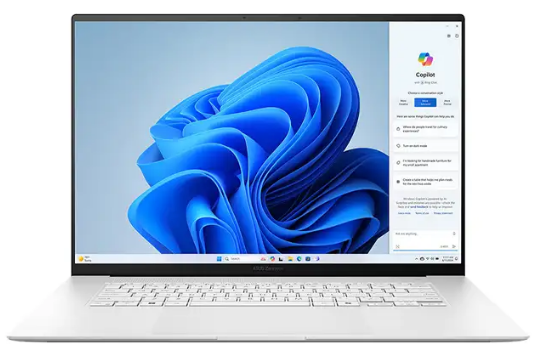
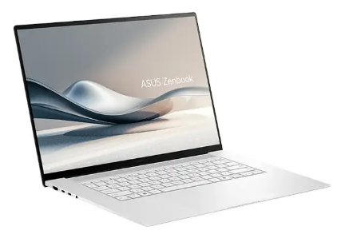
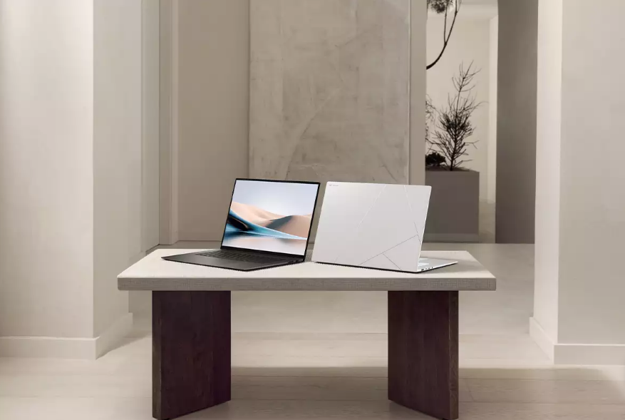
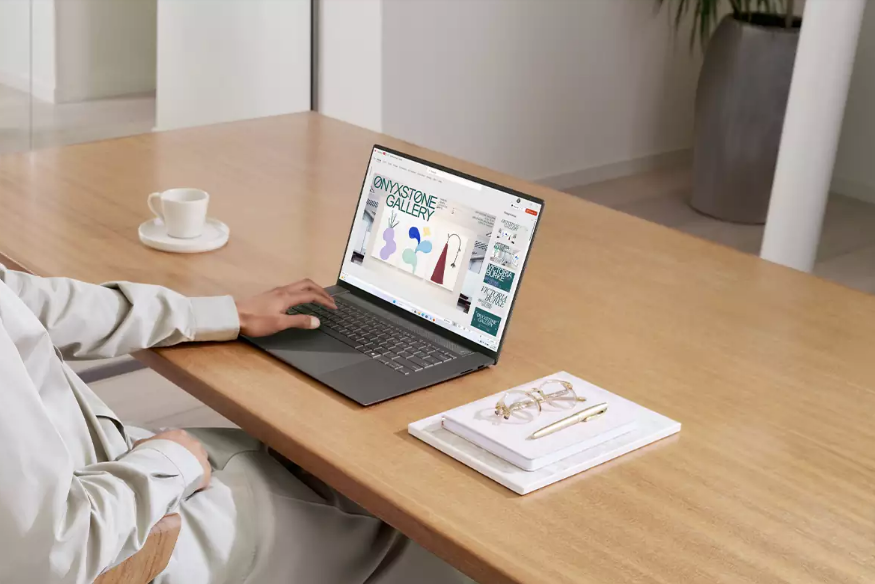

پردازنده اصلی: AMD Ryzen AI 9 HX 370
حافظه رم: 32 گیگابایت LPDDR5X
حافظه داخلی: 2 ترابایت SSD
حافظه پردازنده گرافیکی: Onboard
پردازنده گرافیکی: AMD Radeon 890M Graphics
اندازه صفحه نمایش: 16 اینچ
رزولوشن: 3K 2880×1800
وزن: 1.5 کیلوگرم
ظرفیت باتری: 78 وات ساعت
لپ تاپ Zenbook S16 OLED UM5606WA از جدیدترین محصولات ایسوس است که با بهره گیری از پردازنده قدرتمند AMD Ryzen™ AI 9 HX 370 و فناوری های مدرن، تجربه ای بی نظیر را برای کاربران حرفه ای به ارمغان می آورد. این مدل با طراحی زیبا و بدنه مقاوم، مناسب کاربرانی است که به دنبال خرید لپ تاپ زنبوک برای استفادههای مختلف از جمله پردازش های سنگین و طراحی گرافیکی هستند.
Zenbook S16 OLED UM5606WA به یکی از جدید ترین و قدرتمند ترین پردازنده های AMD مجهز شده است. AMD Ryzen AI 9 HX 370 با ۱۲ هسته و ۲۴ رشته، فرکانس پایه ۲.۰ گیگاهرتز و فرکانس توربو تا ۵.۱ گیگاهرتز، قدرت پردازشی بی نظیری را برای اجرای همزمان چندین برنامه و نرم افزار فراهم می کند. این پردازنده به همراه واحد پردازش عصبی AMD XDNA NPU، بهینه سازی شده برای پردازش های هوش مصنوعی، امکان انجام کارهایی مانند ویرایش ویدئو، طراحی سه بعدی و پردازش های پیچیده را فراهم می آورد. این لپ تاپ ایسوس همچنین با کارت گرافیکAMD Radeon 890M عرضه می شود ، که قدرت کافی برای اجرای بازی ها و نرم افزارهای گرافیکی سنگین را دارد. این کارت گرافیک، به صورت یکپارچه (Onboard) با پردازنده کار می کند و نیاز به کارت گرافیک مجزا را از بین میبرد. بنابراین، این لپ تاپ برای کاربرانی که به دنبال یک دستگاه قدرتمند برای اجرای نرم افزارهای گرافیکی، مدل سازی سه بعدی و حتی بازیهای نیمه سنگین هستند، بسیار مناسب است.
از دیگر ویژگی های برجسته لپ تاپ ایسوس Zenbook S16 می توان به حافظه ۳۲ گیگابایتی LPDDR5X اشاره کرد که بالاترین سرعت و عملکرد را در میان حافظه های رم ارائه می دهد. این حافظه به کاربر این امکان را می دهد که هم زمان چندین برنامه سنگین را بدون افت سرعت اجرا کند. از طرف دیگر، فضای ذخیرهسازی ۲ ترابایت M.2 NVMe PCIe 4.0 SSD سرعت بالایی را در خواندن و نوشتن اطلاعات فراهم می کند، بنابراین کاربران می توانند فایل های حجیم خود را با سرعتی بی نظیر مدیریت کنند. حافظه SSD M.2 NVMe PCIe 4.0 SSD نسبت به نسل های قبلی SSD بهبود چشمگیری داشته و عملکرد بهتری در اجرای برنامه ها و بوت سریع سیستم ارائه می دهد. این امر به ویژه برای کاربرانی که در حوزه تولید محتوای دیجیتال، برنامه نویسی و طراحی فعالیت می کنند، اهمیت دارد زیرا سرعت بیشتر به معنی افزایش بهره وری است.
یکی از نقاط قوت برجسته لپ تاپ Zenbook UM5606WA، نمایشگر OLED آن است که 16 اینچی است و وضوح 2880×1800 را ارائه می دهد. این نمایشگر با نرخ تازهسازی ۱۲۰ هرتز، تصاویر را با کیفیت فوق العاده ای به نمایش می گذارد. فناوری HDR و پوشش ۱۰۰ درصدی طیف رنگی ، این صفحه نمایش را به گزینه ای ایده آل برای طراحان گرافیک و تولید کنندگان محتوای بصری تبدیل کرده است.
طراحی Zenbook S16 OLED UM5606WA نشاندهنده ترکیبی از زیبایی و کارایی است. این دستگاه با وزنی تنها ۱.۵ کیلوگرم و ضخامت ۱.۱۹ سانتیمتر، به راحتی قابل حمل است و برای افرادی که دائما در حرکت هستند و نیاز به دستگاهی قدرتمند دارند، انتخابی مناسب است. این لپ تاپ همچنین دارای صفحه کلید نور با پس زمینه و تاچ پد دقیق است که تجربه تایپ و استفاده از دستگاه را بهبود می بخشد. در محیط های کم نور نیز می توانید به راحتی با این دستگاه کار کنید. علاوه بر این، وجود دوربین FHD IR با پشتیبانی از Windows Hello امنیت سیستم را با قابلیت تشخیص چهره افزایش می دهد.
لپ تاپ ایسوس زنبوک UM5606WA از نظر پورت های ورودی و خروجی نیز بسیار کامل است. این دستگاه دارای دو پورت USB 4.0 Gen 3 Type-C با پشتیبانی از انتقال داده با سرعت ۴۰ گیگابیت بر ثانیه، یک پورت USB 3.2 Type-A، پورت HDMI 2.1 و جک ۳.۵ میلی متری هدفون است. این مجموعه پورت ها، امکان اتصال به انواع دستگاه های جانبی را فراهم می کند. باتری ۷۸ وات ساعتی این لپ تاپ عمر باتری قابل توجهی دارد و با استفاده های معمولی مثل مرور وب و تماشای ویدئو، تا چندین ساعت مداوم کار می کند. این امر به دلیل بهینه سازی های خاصی است که ایسوس برای مدیریت انرژی و استفاده از سخت افزارهای کم مصرف مانند نمایشگر OLED و پردازنده AMD انجام داده است.
| مشخصات فیزیکی | پردازنده مرکزی | حافظه RAM | حافظه داخلی | صفحه نمایش | باتری | |||||||||
|---|---|---|---|---|---|---|---|---|---|---|---|---|---|---|
| ابعاد | سازنده پردازنده | سری پردازنده | مدل پردازنده | فرکانس پردازنده | ظرفیت حافظه رم | نوع حافظه رم | ظرفیت حافظه داخلی | نوع حافظه داخلی | اندازه صفحه نمایش | نوع صفحه نمایش | دقت صفحه نمایش | صفحه نمایش مات | صفحه نمایش لمسی | توضیحات باتری |
| 1.19×24.30×35.36 سانتی متر | AMD | Ryzen AI 9 | HX 370 | 2.0 تا 5.1 گیگاهرتز | 32 گیگابایت | LPDDR5X | 2 ترابایت | SSD | 16 اینچ | OLED | 3K 2880×1800 | خیر | بله | 78WHrs |
لپ تاپ Zenbook S16 OLED UM5606WA با ترکیبی از پردازنده قدرتمند، کارت گرافیک پیشرفته، نمایشگر OLED با کیفیت فوق العاده و طراحی زیبا، یکی از بهترین گزینه ها برای کاربران حرفه ای است. اگر به دنبال دستگاهی هستید که هم برای کارهای گرافیکی و هم برای اجرای نرم افزارهای سنگین مناسب باشد، این لپ تاپ ایسوس انتخابی بی نظیر است.